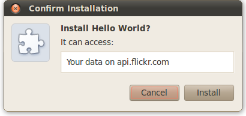
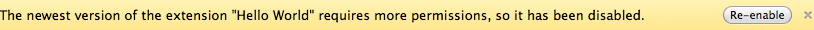
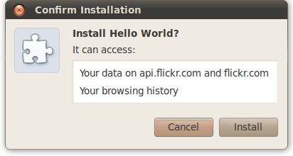

Except as otherwise noted, the content of this page is licensed under the Creative Commons Attribution 3.0 License, and code samples are licensed under the BSD License.
©2011 Google
To use most chrome.* APIs and extension capabilities, your extension must declare its intent in the manifest, often in the "permissions" field. Some of these declarations result in a warning when a user installs your extension.
When you autoupdate your extension, the user might see another warning if the extension requests new permissions. These new permissions might be new APIs that your extension uses, or they might be new websites that your extension needs access to.
Here's a typical dialog that a user might see when installing an extension:
The warning about access to data on api.flickr.com is caused by the following lines in the extension's manifest:
"permissions": [ "http://api.flickr.com/" ],
Note:
You don't see permission warnings when
you load an unpacked extension.
You get permission warnings only when you install an extension
from a .crx file.
If you add a permission to the extension when you autoupdate it, the user might see a new permission warning. For example, assume you add a new site and the "tabs" permission to the previous example:
"permissions": [ "http://api.flickr.com/", "http://*.flickr.com/", "tabs" ],
When the extension autoupdates, the increased permissions cause the extension to be disabled until the user re-enables it. Here's the warning the user sees:
Clicking the Re-enable button brings up the following warning:

It can be surprising when adding a permission such as "tabs"
results in the seemingly unrelated warning
that the extension can access your browsing activity.
The reason for the warning is that
although the chrome.tabs API
might be used only to open new tabs,
it can also be used to see the URL that's associated
with every newly opened tab
(using their Tab objects).
Note:
As of Google Chrome 7,
you no longer need to specify the "tabs" permission
just to call chrome.tabs.create()
or chrome.tabs.update().
The following table lists the warning messages that users can see, along with the manifest entries that trigger them.
| Warning message | Manifest entry that causes it | Notes |
|---|---|---|
| All data on your computer and the websites you visit | "plugins" | The "plugins" permission is required by NPAPI plugins. |
| Your bookmarks | "bookmarks" permission |
The "bookmarks" permission is required by the
chrome.bookmarks module.
|
| Your browsing history | "history" permission |
The "history" permission is required by
|
| Your tabs and browsing activity |
Any of the following:
|
The "tabs" permission is required by the
The "webNavigation" permission is required by the
|
| Settings that specify whether websites can use features such as cookies, JavaScript, and plug-ins | "contentSettings" permission |
The "contentSettings" permission is required by
|
| Your data on all websites |
Any of the following:
|
The "debugger" permission is required by the experimental debugger module.
The "proxy" permission is required by the
Any of the following URLs match all hosts:
|
| Your data on {list of websites} | A match pattern in the "permissions" field that specifies one or more hosts, but not all hosts |
Up to 3 sites are listed by name.
Subdomains aren't treated specially.
For example,
On autoupdate,
the user sees a permission warning
if the extension adds or changes sites.
For example, going from |
|
Your list of installed apps, extensions, and themes
or Manage themes, extensions, and apps |
"management" permission |
The "management" permission is required by the
chrome.management module.
|
| Your physical location | "geolocation" permission | Allows the extension to use the proposed HTML5 geolocation API without prompting the user for permission. |
| Data you copy and paste | "clipboardRead" permission |
Allows the extension to use the following editing commands with
document.execCommand():
|
The following permissions don't result in a warning:
If you'd like to see exactly which warnings your users will get,
package your extension
into a .crx file,
and install it.
To see the warnings users will get when your extension is autoupdated,
you can go to a little more trouble
and set up an autoupdate server.
To do this, first create an update manifest
and point to it from your extension,
using the "update_url" key
(see Autoupdating).
Next, package the extension
into a new .crx file,
and install the app from this .crx file.
Now, change the extension's manifest to contain the new permissions,
and repackage the extension.
Finally, update the extension
(and all other extensions that have outstanding updates)
by clicking the chrome://extensions page's
Update extensions now button.
You can get a list of permission warnings for any manifest with chrome.management.getPermissionWarnings().